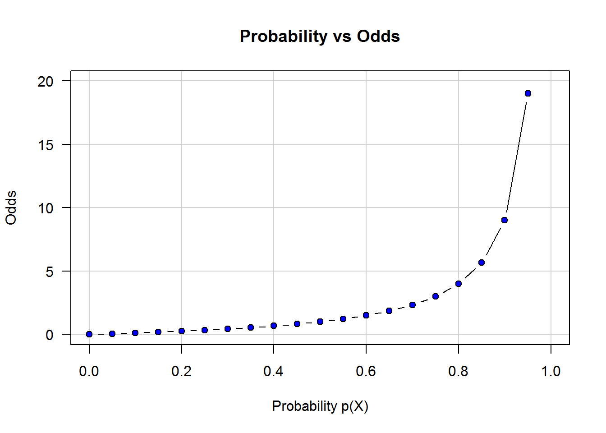

3 Part III - Machine Learning
Work in progress
3.1 Multiple regression
Work in progress
3.2 Multicollinearity
3.3 Logistic regression
Logistic regression is a useful tool to model the probability of the dependent variable to belong to a particular (binary) category. Thus, logistic regression is part of the group of techniques typically used for classification problems. More formally, logistic regression models the relationship between \(p(X) = Pr(Y=1|X)\), where \(p(X)\) denotes the probability for \(Y\) to be True given a specific value of \(X\).
In classification problems we are interested on predicting whether an event will happen or not, if an individual belogs to group A or group B, or whether the market will move downward or upward. All those are examples of binary classification problems for which we need a mathematical function which output ranges between 0 and 1 for all the domain of \(X\). In other words, regardless the value of \(X\) the output value of \(f\) is always a number between 0 and 1.
You might wonder why not to use linear regression for classification problems. Remember that for linear regression \(p(X)\) is defined as \(p(X) = {\beta_0} + {\beta_1} X\) which is of little help to make predictions about the category of a variable given that it’s codomain includes all the real numbers \(\mathbb{R}\) from \(-{\infty}\) to \({\infty}\). That is \(f: \mathbb{R} \mapsto \mathbb{R}\). How would you interpret a negative probability? What would be the meaning of a very large probability number such as 9000%? There are several function that satisfy this condition \(f: \mathbb{R} \mapsto (0,1)\) however linear regression is not one of them.
One of the functions that satisfy this condition is the logistic function defined below:
\[p(X) = \frac{e^{{\beta_0} + {\beta_1} X}}{1+e^{{\beta_0} + {\beta_1} X}}\] , which can also be expressed as follows:
\[\frac{p(X)}{1-p(X)} = e^{{\beta_0} + {\beta_1} X}\] The left side of the equation above is also known as the odds of the event. The odds describe the likeliness that an event will occur and can take any value from zero to infinite. An odds value close to zero indicates that the event is very unlikely to happen, the higher the odds value the higher the likeliness for the event to happen.
The likeliness of the odds is not exactly the same as the probability for the event to happen, remember that probability is denoted by \(p(X)\) and lies between zero to one. For example, let’s say that the probability \(p(X)\) for a medical diagnostic to be correct is 80% this will imply an odds value of 4 given that \(\frac{0.8}{1-0.8} = 4\). In other words, 8 in 10 people with an odds of 4 will receive the correct diagnostic.
par(las = 1)
plot(x = seq(from = 0, to = 1, by = 0.05),
y = seq(from = 0, to = 1, by = 0.05)/(1-seq(from = 0, to = 1, by = 0.05)),
main = 'Probability vs Odds',
xlab = 'Probability p(X)',
ylab = 'Odds',
type = 'b', pch = 21, bg="blue",
panel.first = grid(lty = 1))
Applying the log..
3.4 Cross Validation
Work in progress
3.5 Decision Trees
Work in progress
3.6 Resampling methods: Bootstrapping & Bagging
Work in progress
3.7 Support Vector Machines
Work in progress
3.8 Clustering Methods
Work in progress
3.9 Dimension Reduction Methods
Work in progress